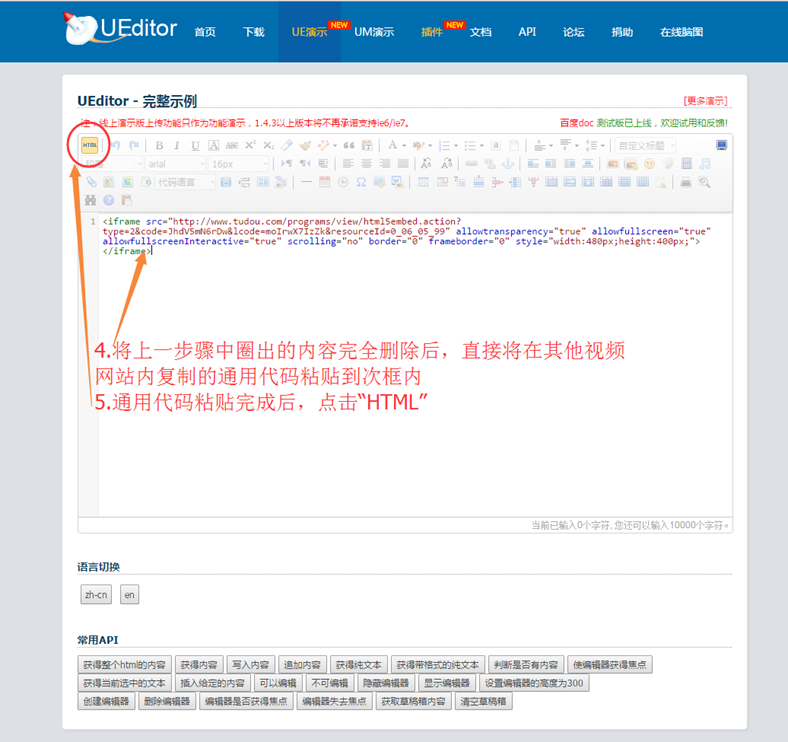
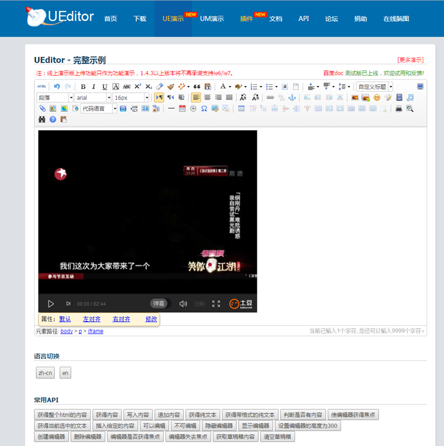

- www.yiban.com
- 549180928@qq.com
- 8698 3248
1、快搭使用帮助
(1)、快搭大屏幕使用说明
注意事项:
•大屏幕组件中自带评论栏，只有在大屏幕组件中发布的评论才会上墙。 为防止参与用户评论位置错误，建议不在含有大屏幕的快搭应用中添加额外的评论组件。 如果一定要另外添加评论组件，请务必要通知参与用户选择正确的评论栏进行评论——如果想要自己的评论上墙，就进入大屏幕自带的评论栏去发布评论， 如果不想上墙，就去快搭应用中的另外一个评论栏进行评论。 •大屏幕的投影仪建议使用长方形设备以防止投影显示不完整。 •建议可以将大屏幕二维码单独打印几份放在显眼的位置，让参与活动的用户使用客户端直接扫码进行参与。
下面是一些具体事项的操作：
1.大屏幕设置 按照自己活动的具体内容进行相关的简单设置。 2.大屏幕背景图片格式： 推荐上传图片尺寸：1920*1080 格式：png、jpg、gif 大小：限2MB
3.动态墙设置 （1）评论审核上墙 •选择不需要审核:任何参与评论的用户所发布的任何评论都会直接在动态墙上显示。 •选择需要审核：参与了评论的用户所发布的所有评论，都需要通过这个快搭的创建者在后台通过审核之后才能上动态墙显示。 •如何审核评论？ 快搭创建者登录q.yiban.cn，点击页面正上方“我的轻应用”——点击轻应用名字进入编辑页面——页面下拉至底部找到“审核管理”——动态墙审核 ，进入后可进行动态墙的评论审核操作。 （2）是否自动回放 回放的内容是动态墙已经审核通过的动态。 选择回放：所有的评论在全部翻页完后会再次从第一条开始循环翻页。 选择不回放：所有的评论在全部翻页结束后停止翻页。 （3）自动翻页时间 •动态墙每一页评论的翻页时间可以自行设置：5秒，10秒，10秒。
4.开幕墙设置 开幕墙设置为不需要的话，则大屏幕页面会直接显示动态墙（也就是评论墙）页面。 设置为需要：活动地点、活动时间、活动简介都在“大屏幕设置”中进行设置。 二维码是自动生成的，用户使用易班客户端扫一扫进行扫码就可以直接参与大屏幕互动了。 5.签到墙 6.抽奖设置 是否需要抽奖？ 不需要：此次活动没有抽奖环节。 需要：点击需要后，下方有两个选项用来设定可以参加抽奖的用户。 ①审核通过的用户：在大屏幕自带的评论栏里面发布了评论并且评论通过了审核的用户。 ②全部评论用户：只要在大屏幕自带的评论栏里面发布了评论的所有用户都可以参加抽奖，无论评论是否通过了审核。 7.闭幕墙 闭幕墙图片格式： 推荐上传图片尺寸：1160*720 格式：png、jpg、gif 大小：限900KB
(2)、快搭轻应用中添加视频方法介绍
需要使用的快搭组件：富文本（富文本组件没有数量限制，因此可以使用此方法添加多个视频） 需要使用到第三方网站： 点我链接 操作步骤1：先将视频上传至视频网站土豆、优酷等视频网站。（注：能够点击“分享”后出现通用代码的视频网站都可以） 操作步骤2：复制视频的通用代码 操作步骤3：打开点我链接 操作步骤4：  操作步骤5：下图是点击“HTML”后的完成界面  操作步骤6：复制上图中的视频（建议选中视频后使用复制的快捷方式Ctrl+C） 操作步骤7：将复制的视频复制进快搭的富文本编辑框中（建议使用粘贴的快捷方式Ctrl+V）